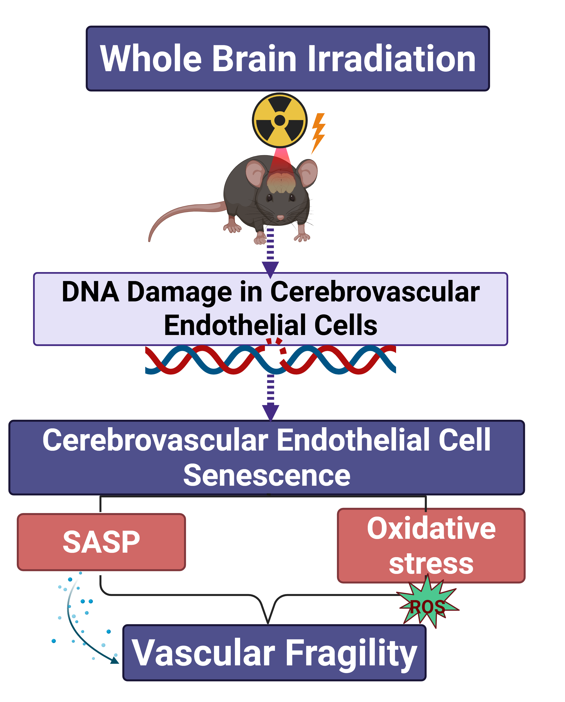
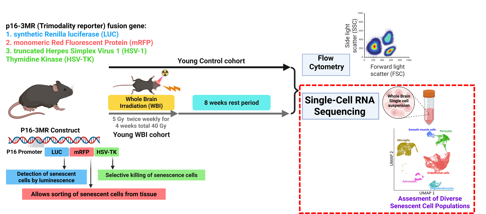
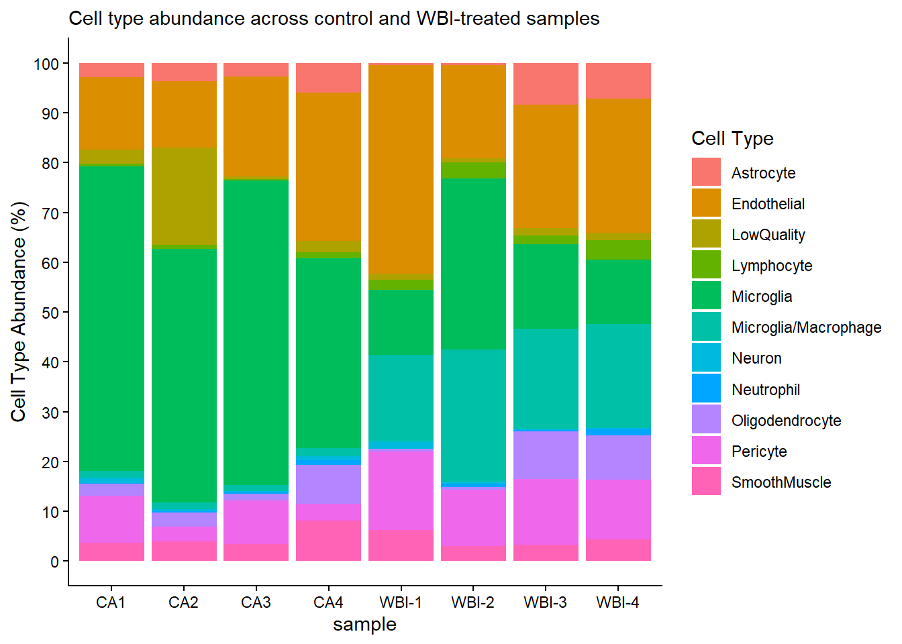
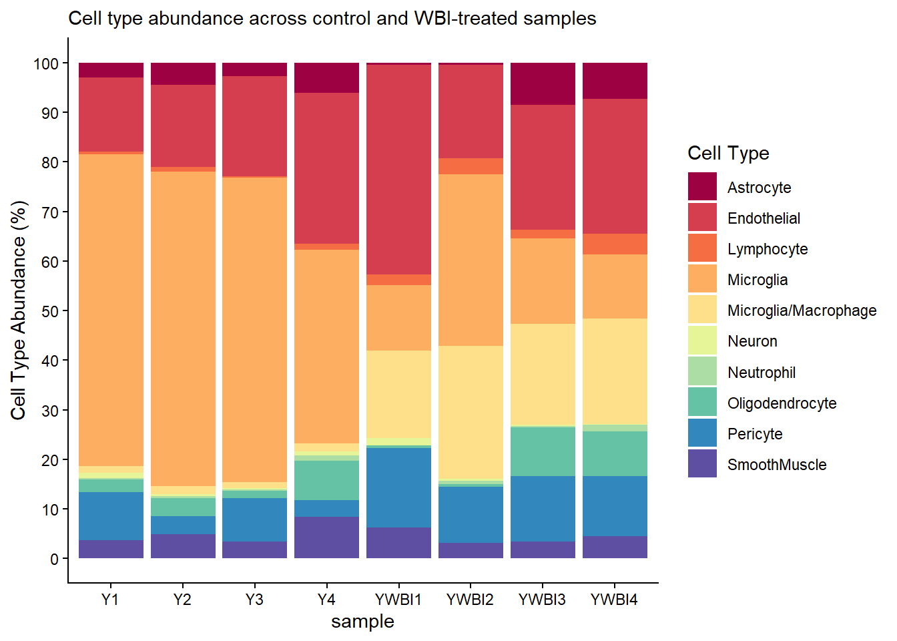
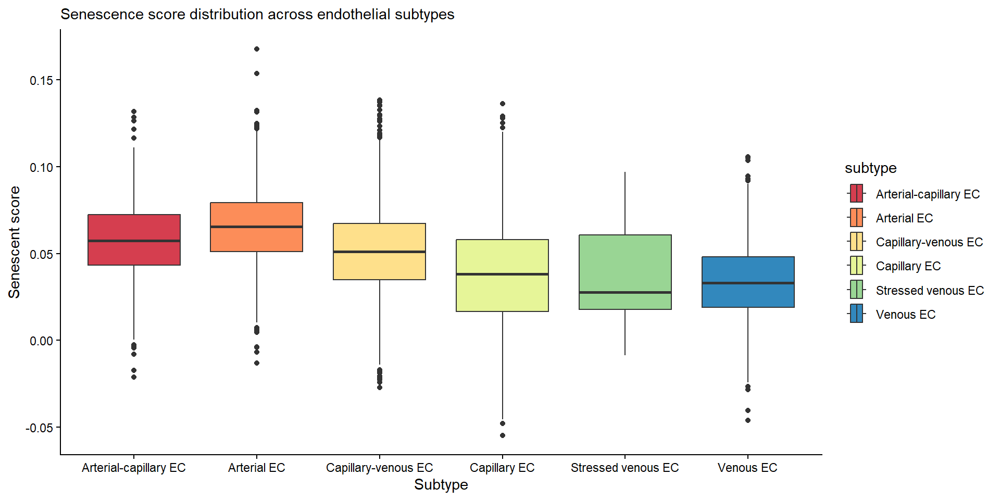
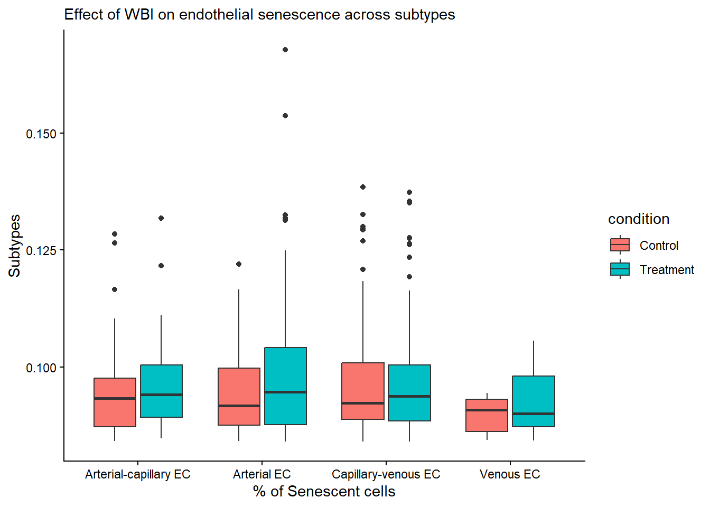

How Brain Radiation Affects Blood Vessel Cells: A Single-Cell RNA-Seq Glimpse
On This Page
- The Problem: Why Brain Radiation Causes Cognitive Decline
- Hypothesis: WBI-Induced Endothelial Senescence Drives Vascular Fragility
- Why Focus on Endothelial Cells?
- Data Acquisition: From Sequencer to R
- Quality Control: Separating Signal from Noise
- First Look at the Data: Cell Type Composition
- The Analysis: Finding Senescent Endothelial Cells
- Results: Radiation Effects on Endothelial Subtypes
- What This Means: Accelerated Vascular Aging
The Problem: Why Brain Radiation Causes Cognitive Decline
Whole brain irradiation (WBI) is a standard treatment for patients with multiple brain metastases. Despite its clinical value, about 50% of long-term survivors develop progressive neurocognitive decline that severely reduces quality of life.
Hypothesis: WBI-Induced Endothelial Senescence Drives Vascular Fragility
Growing preclinical evidence points to radiation-induced cerebrovascular injury as a central driver of this decline. Here, we test the hypothesis that WBI-induced endothelial senescence promotes cerebrovascular fragility, leading to cerebral microhemorrhages (CMHs) that mimic accelerated vascular aging.
Why Focus on Endothelial Cells?
Endothelial cells are a key part of the neurovascular unit and are essential for maintaining blood-brain barrier integrity, regulating cerebral blood flow, and preserving normal brain function. Because of these roles, endothelial injury may be one of the main ways that whole brain irradiation leads to long-term cerebrovascular dysfunction and cognitive decline.
This focus is supported by our lab’s previous work showing that WBI induces endothelial dysfunction in the mouse brain and produces an accelerated vascular aging-like phenotype. In addition, senolytic treatment with Navitoclax/ABT263 has been shown to reduce WBI-induced blood-brain barrier disruption, further suggesting that senescent endothelial cells may play an important role in radiation-related brain injury [1-3].
Experimental Design
- Subjects: Young mice
- Treatment: Fractionated Whole-Brain X-ray Irradiation (WBI) at a clinically relevant dose of 5 Gy twice weekly for four weeks, for a total dose of 40 Gy
- Timepoint: Two months post-treatment; FACS and scRNA-seq readouts
- Method: 10x Genomics Chromium Single Cell 3′ Gene Expression
Figure 1 summarizes the experimental design, including the p16-3MR reporter system, irradiation protocol, cell sorting, and single-cell RNA-sequencing workflow.

Data Acquisition: From Sequencer to R
Load the annotated count matrix
data.table <- read.csv("C:/Users/SCHANDR5/OneDrive - University of Oklahoma/Documents/Github drive/sivasaichandragiri.github.io/projects/WBI_all_annot_v0_obs_for Final Assisgment.csv")Quality Control: Separating Signal from Noise {#qc was checked before}
Sample Selection and Filtering
library(tidyverse)── Attaching core tidyverse packages ──────────────────────── tidyverse 2.0.0 ──
✔ dplyr 1.2.1 ✔ readr 2.2.0
✔ forcats 1.0.1 ✔ stringr 1.6.0
✔ ggplot2 4.0.3 ✔ tibble 3.3.1
✔ lubridate 1.9.5 ✔ tidyr 1.3.2
✔ purrr 1.2.2
── Conflicts ────────────────────────────────────────── tidyverse_conflicts() ──
✖ dplyr::filter() masks stats::filter()
✖ dplyr::lag() masks stats::lag()
ℹ Use the conflicted package (<http://conflicted.r-lib.org/>) to force all conflicts to become errorslibrary(ggplot2)
glimpse(data.table)Rows: 145,985
Columns: 13
$ X <int> 0, 1, 2, 3, 4, 5, 6, 7, 8, 9, 10, 11, 12, 13, 14, 15, 16,…
$ orig.ident <int> 0, 0, 0, 0, 0, 0, 0, 0, 0, 0, 0, 0, 0, 0, 0, 0, 0, 0, 0, …
$ nCount_RNA <int> 7574, 2120, 5835, 1358, 3082, 3636, 2908, 5905, 2818, 937…
$ nFeature_RNA <int> 2911, 1288, 2507, 864, 1654, 1902, 1625, 2501, 1599, 3750…
$ percent.mt <dbl> 4.7531027, 1.8867925, 1.3710368, 4.3446244, 1.2978585, 5.…
$ group <chr> "WT_young", "WT_young", "WT_young", "WT_young", "WT_young…
$ mouseid <chr> "CA1", "CA1", "CA1", "CA1", "CA1", "CA1", "CA1", "CA1", "…
$ sampleid <chr> "CA1", "CA1", "CA1", "CA1", "CA1", "CA1", "CA1", "CA1", "…
$ leiden_0 <int> 7, 0, 2, 0, 0, 4, 3, 10, 3, 1, 0, 1, 1, 1, 0, 1, 1, 0, 0,…
$ barcode <chr> "CA1AAACCCAAGACCTCCG-1", "CA1AAACCCACAAAGACGC-1", "CA1AAA…
$ celltype <chr> "Astrocyte", "Microglia", "Microglia/Macrophage", "Microg…
$ subtype <chr> "Astrocyte", "Low_quality_C0", "MHCII+_BAM", "Low_quality…
$ score <dbl> 0.020501215, 0.077348521, 0.071133504, 0.018898575, 0.050…#creating a vector of the sample_ids I wan to extract
target_ids = c("CA1", "CA2", "CA3", "CA4", "WBI-1", "WBI-2", "WBI-3", "WBI-4")
# Filter to samples of interest
filterd_ids = data.table |>
filter(sampleid %in% target_ids)
unique_count <- n_distinct(filterd_ids$sampleid)
unique_count[1] 8write.csv(filterd_ids, file = "output.csv")First Look at the Data: Cell Type Composition
Calculating Cell Type Abundance
# Calculate percentage abundance
celltype_abundance_wide <- table(
filterd_ids$celltype,
filterd_ids$sampleid
) |>
prop.table(margin = 2) |>
(\(x) x * 100)() |>
as.data.frame.matrix() |>
rownames_to_column("celltype")
glimpse(celltype_abundance_wide)Rows: 11
Columns: 9
$ celltype <chr> "Astrocyte", "Endothelial", "LowQuality", "Lymphocyte", "Micr…
$ CA1 <dbl> 2.8861402, 14.5258484, 2.8649963, 0.5497410, 61.0423935, 1.36…
$ CA2 <dbl> 3.6057376, 13.3570207, 19.5946835, 0.7237794, 50.9935518, 1.2…
$ CA3 <dbl> 2.7249576, 20.0339559, 0.5008489, 0.3480475, 61.1375212, 1.20…
$ CA4 <dbl> 5.9291885, 29.8153481, 2.2022700, 1.2027782, 38.2178553, 1.54…
$ `WBI-1` <dbl> 0.4247573, 41.8234223, 1.2135922, 2.0175971, 13.1219660, 17.4…
$ `WBI-2` <dbl> 0.4029550, 18.7374077, 0.8730692, 3.1900604, 34.3183345, 26.5…
$ `WBI-3` <dbl> 8.3218707, 24.8280605, 1.4614856, 1.8053645, 16.9876204, 20.0…
$ `WBI-4` <dbl> 7.134282, 26.907906, 1.492025, 4.013034, 12.845138, 20.888355…# my_cols = c("celltypes", )
# Convert to long format for plotting
celltype_abundance_long <- celltype_abundance_wide %>%
pivot_longer(cols = -celltype, names_to = "sample", values_to = "abudance")
glimpse(celltype_abundance_long)Rows: 88
Columns: 3
$ celltype <chr> "Astrocyte", "Astrocyte", "Astrocyte", "Astrocyte", "Astrocyt…
$ sample <chr> "CA1", "CA2", "CA3", "CA4", "WBI-1", "WBI-2", "WBI-3", "WBI-4…
$ abudance <dbl> 2.8861402, 3.6057376, 2.7249576, 5.9291885, 0.4247573, 0.4029…Creating visualization
ggplot(celltype_abundance_long, aes (x = sample, y = abudance, fill = celltype)) + geom_bar(stat = "identity") + scale_y_continuous(limits = c(0, 100), breaks = seq(0, 100, 10)) + theme_classic() + labs(subtitle = "Cell type abundance across control and WBI-treated samples", x = "sample", y = "Cell Type Abundance (%)", fill = "Cell Type")
###| fig: Cell type abundance across control and WBI-treated samplesRenaming for clarity
table(filterd_ids$celltype)
Astrocyte Endothelial LowQuality
2158 12837 2227
Lymphocyte Microglia Microglia/Macrophage
786 22731 4781
Neuron Neutrophil Oligodendrocyte
331 245 2215
Pericyte SmoothMuscle
5165 2482 filtered_Lowquality = filterd_ids |> filter(celltype !="LowQuality")
filtered_Lowquality$sampleid[filtered_Lowquality$sampleid == "CA1"] = "Y1"
filtered_Lowquality$sampleid[filtered_Lowquality$sampleid == "CA2"] = "Y2"
filtered_Lowquality$sampleid[filtered_Lowquality$sampleid == "CA3"] = "Y3"
filtered_Lowquality$sampleid[filtered_Lowquality$sampleid == "CA4"] = "Y4"
filtered_Lowquality$sampleid[filtered_Lowquality$sampleid == "WBI-1"] = "YWBI1"
filtered_Lowquality$sampleid[filtered_Lowquality$sampleid == "WBI-2"] = "YWBI2"
filtered_Lowquality$sampleid[filtered_Lowquality$sampleid == "WBI-3"] = "YWBI3"
filtered_Lowquality$sampleid[filtered_Lowquality$sampleid == "WBI-4"] = "YWBI4"
filtered_Lowquality_wide <- table(
filtered_Lowquality$celltype,
filtered_Lowquality$sampleid
) |>
prop.table(margin = 2) |>
(\(x) x * 100)() |>
as.data.frame.matrix() |>
rownames_to_column("celltype")
filtered_Lowquality_long <- filtered_Lowquality_wide |>
pivot_longer(cols = -celltype, names_to = "sample", values_to = "abudance")#tiff("Cellabuandance_plot.tiff", units = "in", width = 6, height = 6, res = 300)
ggplot(filtered_Lowquality_long, aes (x = sample, y = abudance, fill = celltype)) +
geom_bar(stat = "identity") +
scale_y_continuous(limits = c(0, 100), breaks = seq(0, 100, 10)) +
theme_classic() +
labs(x = "sample", y = "Cell Type Abundance (%)", fill = "Cell Type", subtitle = "Cell type abundance across control and WBI-treated samples") +
scale_fill_brewer(palette = "Spectral")
###| fig 1: Cell type abundance across control and WBI-treated samplesKey Observation
The control samples were dominated by microglia, whereas the WBI samples showed a more mixed cell composition with a noticeable increase in microglia/macrophage and neutrophil abundance. This shift suggests that radiation may alter the brain immune environment and promote changes in vascular-associated cell population
The Analysis: Finding Senescent Endothelial Cells
Focusing on Endothelial Cells
# Subset to endothelial cells
filtered_Lowquality_EC = subset(filtered_Lowquality, grepl("EC", subtype, useBytes = TRUE))
# Remove fenestrated ECs (not relevant for brain vasculature)
filtered_Lowquality_EC_filtered = filtered_Lowquality_EC |> filter(subtype != "Fenestrated EC")
### Senescence Score Distribution
ggplot(filtered_Lowquality_EC_filtered,aes (x = score, y = subtype, fill = subtype))+
geom_boxplot() +
#scale_y_continuous(limits = c(0, 3000), breaks = seq(0, 100, 10)) +
theme_classic() +
labs(subtitle = "Senescence score distribution across endothelial subtypes",x = "Senescent score", y = "Subtype") +
coord_flip() + # fill = "Cell Type") +
scale_fill_brewer(palette = "Spectral")
###| fig 2: Senescence score distribution across endothelial subtypesKey Observation
The Arterial EC and Arterial-capillary EC subtypes appear to have the highest senescence scores, with medians above the other endothelial groups. In contrast, Stressed venous EC and Venous EC show lower overall senescence scores, suggesting subtype-specific differences in endothelial aging
Results: Radiation Effects on Endothelial Subtypes
Defining Treatment Groups
# Define experimental conditions
control = c("Y1", "Y2", "Y3", "Y4")
treatment = c("YWBI1", "YWBI2", "YWBI3", "YWBI4")
plot.data = filtered_Lowquality_EC_filtered |>
mutate(condition = case_when(
sampleid %in% control ~ "Control",
sampleid %in% treatment ~ "Treatment"
))
tail(sort(filtered_Lowquality_EC_filtered$score))[1] 0.1354426 0.1362689 0.1373186 0.1384847 0.1537237 0.1678650# Apply senescence threshold (based on the calculation)
threshold = 0.5 * 0.168
# Focus on relevant EC subtypes
plot.data.filtered = plot.data |> filter(score > threshold)
plot.data.filtered = plot.data.filtered |> filter(subtype %in% c("Arterial-capillary EC", "Arterial EC", "Capillary-venous EC", "Venous EC"))
## Treatment Effect on Senescence
ggplot(plot.data.filtered,
aes(x = subtype, y = score, fill = condition)) +
#stat_boxplot(geom = "errorbar", width = 0.2) +
geom_boxplot() +
theme_classic() +
labs(x = "% of Senescent cells", y = "Subtypes", subtitle = "Effect of WBI on endothelial senescence across subtypes" )
#coord_flip()
#scale_fill_brewer(palette = "Spectral")
###| fig 3: Effect of WBI on endothelial senescence across subtypesKey Observation
The treatment group shows slightly higher senescence percentages than the control group across most endothelial subtypes, especially in arterial-capillary and arterial ECs. Overall, the boxplots suggest a modest increase in endothelial senescence after WBI, with the largest shift seen in the more arterial-like cell populations
What This Means: Accelerated Vascular Aging
Key Findings
- WBI induces endothelial senescence across multiple EC subtypes
- Vascular-specific effects suggest blood-brain barrier compromise
- Senescence patterns resemble accelerated vascular aging phenotypes
Next Steps
- Differential expression analysis to identify senescence-associated genes
- Pathway enrichment analysis for mechanistic insights
- Integration with vascular fragility markers
References
1.Kiss, T., Ungvari, A., Gulej, R. et al. Whole brain irradiation–induced endothelial dysfunction in the mouse brain. GeroScience 46, 531–541 (2024). https://doi.org/10.1007/s11357-023-00990-4
2.Gulej, R., Nyúl-Tóth, Á., Ahire, C. et al. Elimination of senescent cells by treatment with Navitoclax/ABT263 reverses whole brain irradiation-induced blood-brain barrier disruption in the mouse brain. GeroScience 45, 2983–3002 (2023). https://doi.org/10.1007/s11357-023-00870-x
Appendix: Code Repository
All code available at: https://github.com/sivasaic/sivasaichandragiri.github.io